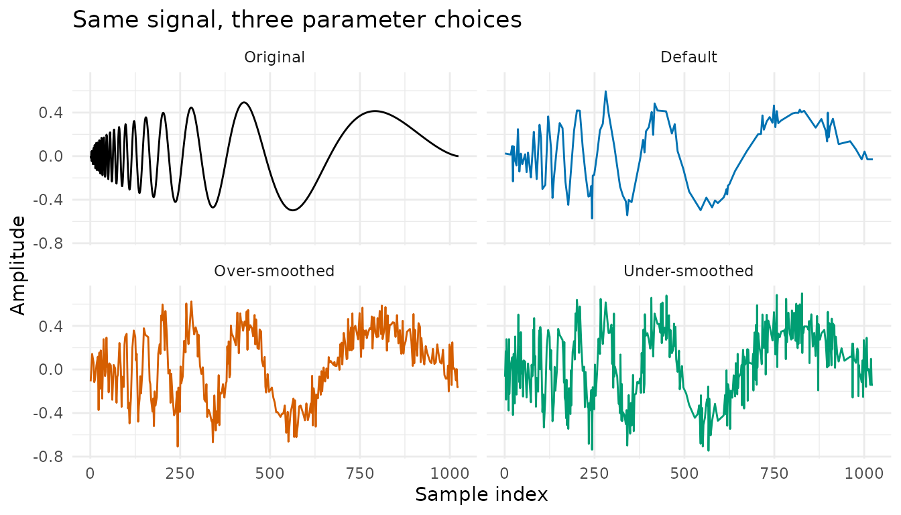
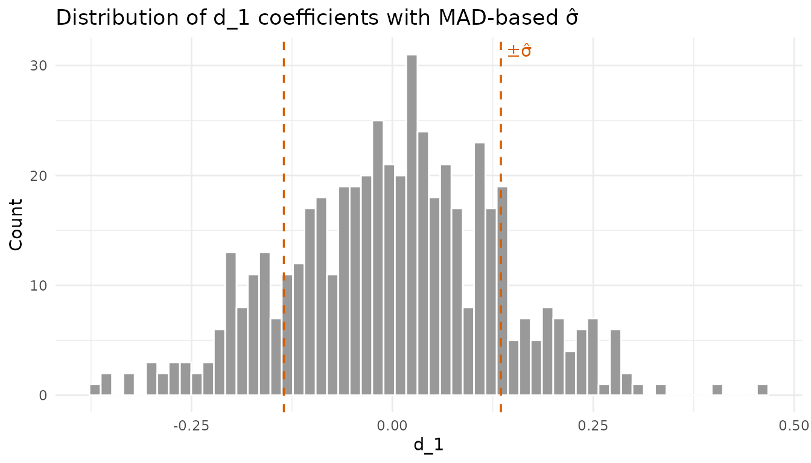
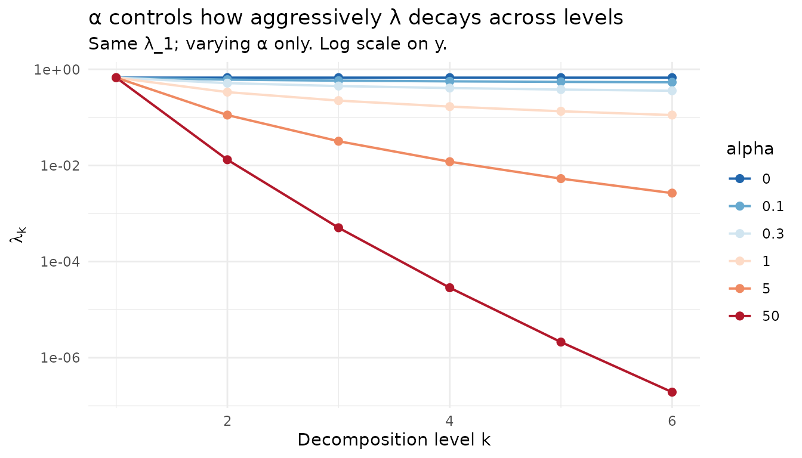
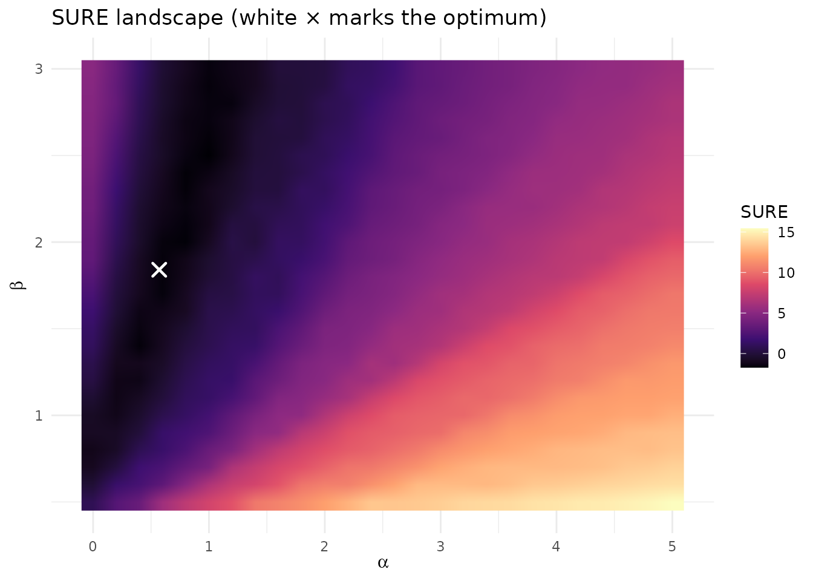
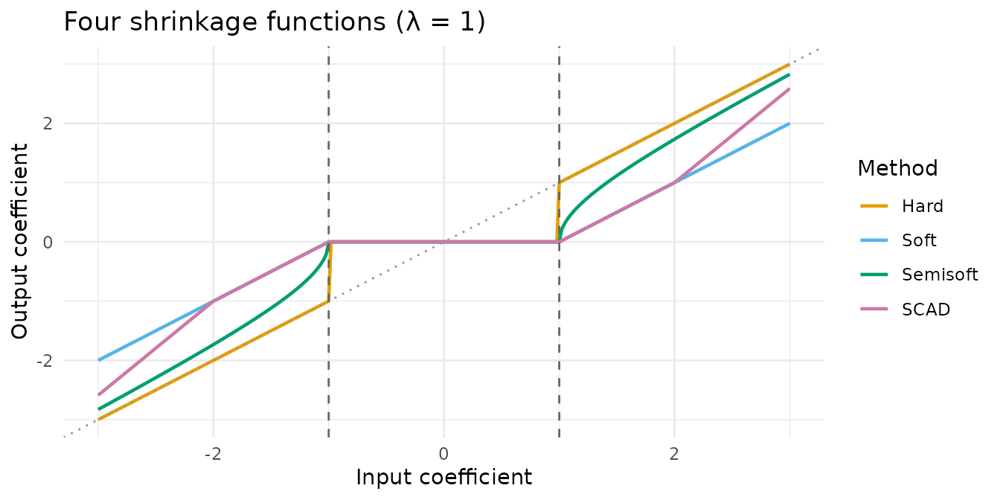
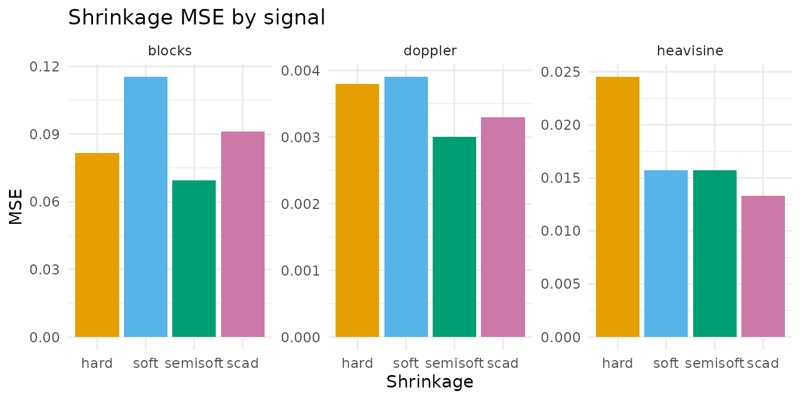

2. Adaptive Thresholding & Parameter Tuning
Source:vignettes/v02-thresholding-and-tuning.Rmd
v02-thresholding-and-tuning.RmdThe introduction vignette walked through the three modes with the
package defaults. This vignette opens the lid on the adaptive
thresholding subsystem, the part of the pipeline that turns wavelet
coefficients into a clean signal, and shows how to choose its parameters
from data rather than by habit. The operational reference (formulas,
parameter ranges, and update protocol) is
inst/notes/02-adaptive-thresholding.md; here we focus on
running examples that demonstrate each effect.
library(rLifting)
if (!requireNamespace("ggplot2", quietly = TRUE)) {
knitr::opts_chunk$set(eval = FALSE)
message("'ggplot2' is required to render plots. Vignette code will not run.")
} else {
library(ggplot2)
}
set.seed(20260521)1. Why parameter choice matters
Three Doppler denoisings of the same noisy signal, varying only the threshold parameters:
n = 1024
t = seq(0, 1, length.out = n)
pure = sqrt(t * (1 - t)) * sin((2 * pi * 1.05) / (t + 0.05))
noisy = pure + rnorm(n, sd = 0.15)
scheme = lifting_scheme("cdf53")
# Three configurations
default_clean = denoise_signal_offline(
noisy, scheme, levels = 5,
shrinkage = "semisoft", alpha = 0.3, beta = 1.2
)
oversmooth_clean = denoise_signal_offline(
noisy, scheme, levels = 5,
shrinkage = "semisoft", alpha = 5, beta = 2.5
)
undersmooth_clean = denoise_signal_offline(
noisy, scheme, levels = 5,
shrinkage = "hard", alpha = 0.1, beta = 0.5
)
mse = function(est) mean((pure - est)^2)
data.frame(
config = c(
"default (semisoft, α=0.3, β=1.2)",
"over (semisoft, α=5, β=2.5)",
"under (hard, α=0.1, β=0.5)"
),
MSE = c(
mse(default_clean),
mse(oversmooth_clean),
mse(undersmooth_clean)
)
)
#> config MSE
#> 1 default (semisoft, α=0.3, β=1.2) 0.003153496
#> 2 over (semisoft, α=5, β=2.5) 0.008800950
#> 3 under (hard, α=0.1, β=0.5) 0.014579868The same wavelet and the same levels can yield substantially
different MSEs; the threshold parameters do most of the work. The effect
is not anecdotal: the package’s regular-grid benchmark
(data/benchmark_rlifting.rda, 3600 configurations across
four Donoho–Johnstone signals) shows the same MSE spread persisting
across signals.
data("benchmark_rlifting", package = "rLifting")
sub = subset(
benchmark_rlifting,
Mode == "offline" & Wavelet == "cdf53" & Boundary == "symmetric"
)
aggregate(
MSE_median ~ Signal, data = sub,
FUN = function(x) c(
min = min(x), median = median(x),
max = max(x), ratio = round(max(x)/min(x), 2)
)
)
#> Signal MSE_median.min MSE_median.median MSE_median.max MSE_median.ratio
#> 1 blocks 0.02014836 0.02973623 0.05313103 2.64000000
#> 2 bumps 0.02100740 0.02557609 0.03626834 1.73000000
#> 3 doppler 0.01008844 0.01186011 0.02650519 2.63000000
#> 4 heavisine 0.01259670 0.01432022 0.03105005 2.46000000Across the twelve thresholding configurations of the offline/cdf53/symmetric slice, max-over-min MSE ratios run roughly 1.7×–2.6× per signal. The spread is a real package-level effect, not a quirk of any one realization.

Figure 1: The same noisy Doppler signal denoised with three different parameter combinations. The default semisoft configuration tracks the underlying signal closely; the over-smoothed run loses fine detail; the under-smoothed hard configuration retains visible residual noise.
The rest of the vignette teaches how to pick (or auto-tune) those parameters.
2. The MAD noise estimate
Every adaptive threshold starts from a noise estimate
.
Under the default threshold_method = "universal",
is computed once from the finest-level detail coefficients
:
The constant () is the theoretical MAD of a standard normal, so is a consistent estimator of the noise SD when noise is white Gaussian.
lw = lwt(noisy, scheme, levels = 5)
d1 = lw$coeffs$d1
sigma_mad = mad(d1, constant = 1.4826) # 1/0.6745 ≈ 1.4826
sigma_sd = sd(d1) # for comparison
cat(sprintf("True noise sd : 0.15\n"))
#> True noise sd : 0.15
cat(sprintf("MAD-based σ̂ : %.4f (used by rLifting)\n", sigma_mad))
#> MAD-based σ̂ : 0.1350 (used by rLifting)
cat(
sprintf(
"Plain sd of d1 : %.4f (sensitive to large signal coeffs)\n", sigma_sd
)
)
#> Plain sd of d1 : 0.1331 (sensitive to large signal coeffs)The two are close because Doppler’s finest-level coefficients are noise-dominated. The advantage of MAD shows up when a few finest-level coefficients carry real signal energy (sharp transitions, spikes):
# Inject five spurious large coefficients (simulating a sharp event)
d1_contam = d1
d1_contam[sample.int(length(d1), 5)] = c(2, -2, 1.8, -1.7, 1.6)
cat(sprintf("With 5 large coeffs added:\n"))
#> With 5 large coeffs added:
cat(
sprintf(
" MAD-based σ̂ : %.4f (essentially unchanged)\n",
mad(d1_contam, constant = 1.4826)
)
)
#> MAD-based σ̂ : 0.1423 (essentially unchanged)
cat(
sprintf(
" Plain sd : %.4f (inflated by outliers)\n",
sd(d1_contam)
)
)
#> Plain sd : 0.2243 (inflated by outliers)
Figure 2: Distribution of the finest-level detail coefficients for the noisy Doppler signal. Dashed lines mark , the MAD-based noise estimate used as input to the universal threshold rule.
This is why the package uses MAD: large signal coefficients in the noise band do not poison .
3. Universal vs SURE
Two threshold-selection rules are available. They share the MAD-based but differ in how the per-level threshold is chosen.
-
Universal (default,
threshold_method = "universal"): (Donoho & Johnstone, 1994); coarser levels are derived from via the recursion below. One global . -
SureShrink
(
threshold_method = "sure"): each level gets its own MAD-based and a that minimises Stein’s Unbiased Risk Estimate (Donoho & Johnstone, 1995) on that level’s coefficients, capped by the universal value. Per-level and .
Side-by-side on three signals:
make_noisy = function(type, n, sd) {
pure = rLifting:::.generate_signal(type, n = n)
list(pure = pure, noisy = pure + rnorm(n, sd = sd))
}
n_3 = 1024
signals = list(
doppler = make_noisy("doppler", n_3, sd = 0.15),
heavisine = make_noisy("heavisine", n_3, sd = 0.35),
blocks = make_noisy("blocks", n_3, sd = 0.50)
)
compare_rules = function(sig) {
un = denoise_signal_offline(
sig$noisy, scheme, levels = 5,
threshold_method = "universal", shrinkage = "semisoft"
)
su = denoise_signal_offline(
sig$noisy, scheme, levels = 5,
threshold_method = "sure", shrinkage = "semisoft"
)
c(
universal = mean((sig$pure - un)^2),
sure = mean((sig$pure - su)^2)
)
}
mse_table = t(sapply(signals, compare_rules))
round(mse_table, 4)
#> universal sure
#> doppler 0.0030 0.0030
#> heavisine 0.0157 0.0237
#> blocks 0.0696 0.0885The winner depends on the signal and on the shrinkage rule (the table
above used semisoft). The package’s regular-grid benchmark contains
direct evidence on this: under benchmark_rlifting.rda,
universal is the dominant winner across (signal × shrinkage)
combinations, but SURE has specific niches.
b = subset(
benchmark_rlifting,
Mode == "offline" & Wavelet == "cdf53" & Boundary == "symmetric" &
ThresholdMethod %in% c("universal", "sure") & !grepl("tuned", Method)
)
b$rule = b$ThresholdMethod
mat = aggregate(MSE_median ~ Signal + Shrinkage + rule, data = b, FUN = mean)
rs = reshape(
mat, idvar = c("Signal", "Shrinkage"),
timevar = "rule", direction = "wide"
)
rs$winner = ifelse(
rs$MSE_median.universal < rs$MSE_median.sure,
"universal", "sure"
)
rs[
order(rs$Signal, rs$Shrinkage),
c("Signal", "Shrinkage", "MSE_median.universal", "MSE_median.sure", "winner")
]
#> Signal Shrinkage MSE_median.universal MSE_median.sure winner
#> 1 blocks hard 0.02645439 0.04928288 universal
#> 5 blocks scad 0.03893193 0.02129423 sure
#> 9 blocks semisoft 0.02497845 0.03014871 universal
#> 13 blocks soft 0.04894833 0.02932374 sure
#> 2 bumps hard 0.02581783 0.03464094 universal
#> 6 bumps scad 0.02584196 0.02383861 sure
#> 10 bumps semisoft 0.02149096 0.02533434 universal
#> 14 bumps soft 0.03626834 0.03260670 sure
#> 3 doppler hard 0.01909680 0.02650519 universal
#> 7 doppler scad 0.01008844 0.01163919 universal
#> 11 doppler semisoft 0.01208103 0.01630373 universal
#> 15 doppler soft 0.01024161 0.01153147 universal
#> 4 heavisine hard 0.01998299 0.03105005 universal
#> 8 heavisine scad 0.01310005 0.01425316 universal
#> 12 heavisine semisoft 0.01366599 0.01887574 universal
#> 16 heavisine soft 0.01370674 0.01438729 universalUniversal wins 12 of 16 (signal × shrinkage) combinations above.
SURE’s niches concentrate on signals with sharp transitions
(blocks, bumps) paired with soft
or scad shrinkage, where per-level
adapts to the heavy-tailed coefficient distribution at fine levels and
the shrinkage rule does not over-attenuate the surviving large
coefficients. On smooth signals (doppler,
heavisine), universal’s global
is more stable and wins every shrinkage.
# Per-level lambda comparison on the Doppler signal
lw_dop = lwt(signals$doppler$noisy, scheme, levels = 5)
sigma_global = mad(lw_dop$coeffs$d1, constant = 1.4826)
# Universal: recursive decay with default alpha=0.3, beta=1.2
lam_univ = compute_adaptive_threshold(lw_dop, alpha = 0.3, beta = 1.2)
lam_univ_vec = unlist(lam_univ)
# SURE: per-level. Replicate by computing optimal lambda per level.
sure_lambda_level = function(d) {
sigma_j = mad(d, constant = 1.4826)
if (sigma_j < 1e-15) return(0)
abs_d = sort(abs(d))
m = length(d)
cap = sigma_j * sqrt(2 * log(m))
best = m * sigma_j^2
bl = 0
cs = c(0, cumsum(abs_d^2))
for (k in seq_len(m)) {
lam = abs_d[k]
s = m * sigma_j^2 + cs[k + 1] + lam^2 * (m - k) - 2 * sigma_j^2 * k
if (s < best) { best = s; bl = lam }
}
min(bl, cap)
}
lam_sure_vec = sapply(lw_dop$coeffs[paste0("d", 1:5)], sure_lambda_level)
data.frame(
level = 1:5,
universal = round(lam_univ_vec, 4),
sure = round(unname(lam_sure_vec), 4)
)
#> level universal sure
#> d1 1 0.5754 0.3504
#> d2 2 0.4427 0.4656
#> d3 3 0.3849 0.3806
#> d4 4 0.3499 0.3492
#> d5 5 0.3255 0.2397The universal threshold decays smoothly across levels following the recursion. SURE produces a level-by-level value that responds to each subband’s coefficient distribution, typically lower at coarse levels (where signal coefficients dominate and SURE prefers to spare them).
Under threshold_method = "sure", the recursion of
Section 4 is bypassed entirely; supplying alpha or
beta has no effect:
a1 = denoise_signal_offline(
signals$doppler$noisy, scheme, levels = 5,
threshold_method = "sure", shrinkage = "semisoft",
alpha = 0.3, beta = 1.2
)
a2 = denoise_signal_offline(
signals$doppler$noisy, scheme, levels = 5,
threshold_method = "sure", shrinkage = "semisoft",
alpha = 999, beta = 0.01
)
identical(a1, a2)
#> [1] TRUE4. The α/β recursion
Under threshold_method = "universal", the per-level
threshold follows (Liu, Mi, & Mao, 2014):
controls how fast the threshold decays from finest to coarsest level. The direction is opposite to what one might guess at first: gives a flat threshold (no decay), and large gives aggressive decay.
n_alpha = 1024
sigma_demo = 0.15
levels_demo = 6
lam1 = 1.2 * sigma_demo * sqrt(2 * log(n_alpha))
recurse = function(alpha, k_max, lam1) {
lam = numeric(k_max); lam[1] = lam1
for (k in 2:k_max) lam[k] = lam[k-1] * (k-1) / (k + alpha - 1)
lam
}
alphas = c(0, 0.1, 0.3, 1, 5, 50)
df_alpha = do.call(
rbind,
lapply(
alphas,
function(a) {
data.frame(
level = 1:levels_demo,
lambda = recurse(a, levels_demo, lam1),
alpha = factor(a)
)
}
)
)
df_alpha
#> level lambda alpha
#> 1 1 6.701935e-01 0
#> 2 2 6.701935e-01 0
#> 3 3 6.701935e-01 0
#> 4 4 6.701935e-01 0
#> 5 5 6.701935e-01 0
#> 6 6 6.701935e-01 0
#> 7 1 6.701935e-01 0.1
#> 8 2 6.092668e-01 0.1
#> 9 3 5.802541e-01 0.1
#> 10 4 5.615363e-01 0.1
#> 11 5 5.478403e-01 0.1
#> 12 6 5.370983e-01 0.1
#> 13 1 6.701935e-01 0.3
#> 14 2 5.155335e-01 0.3
#> 15 3 4.482900e-01 0.3
#> 16 4 4.075364e-01 0.3
#> 17 5 3.791036e-01 0.3
#> 18 6 3.576449e-01 0.3
#> 19 1 6.701935e-01 1
#> 20 2 3.350968e-01 1
#> 21 3 2.233978e-01 1
#> 22 4 1.675484e-01 1
#> 23 5 1.340387e-01 1
#> 24 6 1.116989e-01 1
#> 25 1 6.701935e-01 5
#> 26 2 1.116989e-01 5
#> 27 3 3.191398e-02 5
#> 28 4 1.196774e-02 5
#> 29 5 5.318996e-03 5
#> 30 6 2.659498e-03 5
#> 31 1 6.701935e-01 50
#> 32 2 1.314105e-02 50
#> 33 3 5.054250e-04 50
#> 34 4 2.860896e-05 50
#> 35 5 2.119182e-06 50
#> 36 6 1.926529e-07 50
Figure 3: Effect of the parameter on the per-level threshold , holding fixed and varying across six representative values. The y-axis is on a log scale. At the threshold is constant across all levels; as grows the decay becomes increasingly aggressive.
is simpler: it scales uniformly. The same recursion runs on top of a smaller or larger initial value.
Practical defaults. The package ships with and . Section 5 shows how to pick them automatically.
5. tune_alpha_beta() walkthrough
tune_alpha_beta() chooses
and
by minimising SURE for the soft-threshold estimator over a grid plus
Nelder-Mead refinement. The resulting parameters drive the
"universal" recursion and are usable with any of
"soft", "semisoft", "hard", or
"scad" (they share the same threshold location).
A worked example on the noisy HeaviSine signal:
opt = tune_alpha_beta(signals$heavisine$noisy, scheme, levels = 5)
opt
#> $alpha
#> [1] 0.5707469
#>
#> $beta
#> [1] 1.840392
#>
#> $sure
#> [1] 1.792176
#>
#> $converged
#> [1] TRUEThe tuner returns the chosen , , the minimised SURE value, and a convergence flag. Compare the tuned result to the defaults:
def_clean = denoise_signal_offline(
signals$heavisine$noisy, scheme, levels = 5,
shrinkage = "semisoft", alpha = 0.3, beta = 1.2
)
tun_clean = denoise_signal_offline(
signals$heavisine$noisy, scheme, levels = 5,
shrinkage = "semisoft", alpha = opt$alpha, beta = opt$beta
)
c(
default_MSE = mean((signals$heavisine$pure - def_clean)^2),
tuned_MSE = mean((signals$heavisine$pure - tun_clean)^2)
)
#> default_MSE tuned_MSE
#> 0.01571175 0.01482898The SURE landscape (phase 1 of the tuner) gives intuition for why the optimum sits where it does:
lw_tune = lwt(signals$doppler$noisy, scheme, levels = 5)
details_tune = lw_tune$coeffs[paste0("d", 1:5)]
sigma_tune = mad(details_tune[[1]], constant = 1.4826)
n_finest = length(details_tune[[1]])
sure_at = function(a, b) {
lam = numeric(5); lam[1] = b * sigma_tune * sqrt(2 * log(n_finest))
for (k in 2:5) lam[k] = lam[k-1] * (k-1) / (k + a - 1)
total = 0
for (j in seq_along(details_tune)) {
d = details_tune[[j]]; m = length(d)
sj = mad(d, constant = 1.4826); if (sj < 1e-15) sj = sigma_tune
total = total + m * sj^2 +
sum(pmin(d^2, lam[j]^2)) -
2 * sj^2 * sum(abs(d) <= lam[j])
}
total
}
a_grid = seq(0, 5, length.out = 26)
b_grid = seq(0.5, 3.0, length.out = 26)
grid_df = expand.grid(alpha = a_grid, beta = b_grid)
grid_df$sure = mapply(sure_at, grid_df$alpha, grid_df$beta)
ggplot(
grid_df, aes(x = alpha, y = beta, fill = sure)
) +
geom_raster(interpolate = TRUE) +
geom_point(
data = data.frame(alpha = opt$alpha, beta = opt$beta),
aes(x = alpha, y = beta), inherit.aes = FALSE,
colour = "white", size = 3, shape = 4, stroke = 1.2
) +
scale_fill_viridis_c(option = "magma") +
theme_minimal() +
labs(
title = "SURE landscape (white × marks the optimum)",
x = expression(alpha), y = expression(beta), fill = "SURE"
)
Figure 4: SURE landscape on the (α, β) grid for the noisy Doppler signal. Darker regions correspond to lower SURE. The white cross marks the optimum returned by tune_alpha_beta(). The landscape is broad and slightly multimodal, which is why phase 1 of the tuner is a grid search before Nelder-Mead refinement.
When tune_alpha_beta() helps. When the
signal’s noise SNR and spectral content are unknown, which is the
typical case. It costs a few seconds for
(one full LWT plus a 21 × 21 SURE grid plus Nelder-Mead).
When defaults suffice. For very smooth signals with well-behaved Gaussian noise, the default is usually within 5–10% of the SURE optimum.
Convergence warning. If Nelder-Mead does not
converge ($converged = FALSE),
tune_alpha_beta() emits a warning and falls
back to the best point found in the phase-1 grid search. The result is
still usable: non-convergence typically signals a flat SURE landscape
where the exact optimum is not critical.
6. Shrinkage choice (hard, soft, semisoft, SCAD)
The threshold tells the engine which coefficients to act on; the shrinkage rule tells it how. All four shrinkages zero out coefficients below and differ above it.

Figure 5: The four shrinkage functions with . Soft introduces a constant bias of on large coefficients; hard is bias-free above but discontinuous; semisoft transitions continuously and asymptotes to the identity; SCAD is bias-free above (default ).
What matters for reconstruction (not just the curve shape) is how each rule interacts with the signal’s coefficient distribution. Below, the same noisy signal denoised four ways:
shrink_mse = function(sig, levels = 5) {
m = sapply(c("hard", "soft", "semisoft", "scad"), function(s) {
out = denoise_signal_offline(
sig$noisy, scheme, levels = levels,
shrinkage = s, threshold_method = "universal",
alpha = 0.3, beta = 1.2
)
mean((sig$pure - out)^2)
})
round(m, 4)
}
shrink_table = t(sapply(signals, shrink_mse))
shrink_table
#> hard soft semisoft scad
#> doppler 0.0038 0.0039 0.0030 0.0033
#> heavisine 0.0245 0.0157 0.0157 0.0133
#> blocks 0.0817 0.1153 0.0696 0.0911
Figure 6: MSE by shrinkage rule across three test signals (Doppler, HeaviSine, Blocks), holding the universal threshold rule and the default , fixed. Y-axes use independent scales.
The pattern is signal-dependent, not absolute. The benchmark dataset confirms this across all four DJ signals:
bs = subset(
benchmark_rlifting,
Mode == "offline" & Wavelet == "cdf53" & Boundary == "symmetric" &
ThresholdMethod == "universal" & !grepl("tuned", Method)
)
bs_agg = aggregate(MSE_median ~ Signal + Shrinkage, data = bs, FUN = mean)
bs_wide = reshape(
bs_agg, idvar = "Signal", timevar = "Shrinkage", direction = "wide"
)
names(bs_wide) = sub("MSE_median\\.", "", names(bs_wide))
bs_wide$winner = c("hard", "soft", "semisoft", "scad")[
apply(bs_wide[, c("hard", "soft", "semisoft", "scad")], 1, which.min)
]
bs_wide[, c("Signal", "hard", "soft", "semisoft", "scad", "winner")]
#> Signal hard soft semisoft scad winner
#> 1 blocks 0.02645439 0.04894833 0.02497845 0.03893193 semisoft
#> 2 bumps 0.02581783 0.03626834 0.02149096 0.02584196 semisoft
#> 3 doppler 0.01909680 0.01024161 0.01208103 0.01008844 scad
#> 4 heavisine 0.01998299 0.01370674 0.01366599 0.01310005 scadInterpretation aligned with the function shapes above:
- Soft: introduces a constant- bias on large coefficients. Smoothest output, but visibly underestimates real peaks.
- Hard: bias-free above but discontinuous. Its ringing can outweigh that benefit on signals where coefficients cluster near .
- Semisoft: continuity-preserving, bias-reducing compromise. Strong default.
- SCAD: bias-free above (default ). Useful when large coefficients carry real content and must not be attenuated.
Empirically across the four signals, semisoft wins on the spatially
inhomogeneous signals (blocks, bumps) and SCAD
wins on the smooth signals (doppler,
heavisine). Plain hard and soft
are dominated everywhere by the bias-reducing variants.
7. Decision guide
The recommendations below are split into two groups by evidence type.
The §7.1 entries come from data/benchmark_rlifting.rda,
which covers the regular grid (uniform sampling). That
benchmark fixes signal length
,
sweeps the four Donoho–Johnstone test signals (blocks,
bumps, doppler, heavisine), and
varies wavelet, boundary, threshold method, shrinkage and mode (3600
cells total, with 1000 Monte Carlo replications per cell). The companion
suite for non-uniform sampling is now available as
data/benchmark_rlifting_irregular.rda (7560 cells × 1000
simulations); a brief summary of its per-signal winners is in §7.3.
7.1 Recommendations grounded in the regular-grid benchmark
| Situation | Recommendation | Evidence |
|---|---|---|
| You know the signal is smooth and oscillatory (Doppler-like) |
threshold_method = "universal",
shrinkage = "scad", default α/β |
SCAD wins on doppler and
heavisine across the cdf53/symmetric slice (Section 6
table); tune_alpha_beta() hurts these signals more often
than it helps |
You know the signal is spatially inhomogeneous — sharp
transitions (blocks) or localized smooth spikes
(bumps) |
threshold_method = "universal",
shrinkage = "semisoft", run tune_alpha_beta()
and keep the better of (defaults, tuned) |
semisoft wins on blocks and
bumps (Section 6 table); tune_alpha_beta()
wins ~70% of cells on these signals with a median +10% improvement |
| You have no priors about the signal |
threshold_method = "universal",
shrinkage = "semisoft", default α/β |
semisoft is the only shrinkage that is never worst across the four signals; universal wins the threshold-rule comparison in 12 of 16 cells (Section 3 table) |
| You are running in causal/stream mode | use haar (or cdf97 only if
the signal is known smooth-oscillatory) |
the wavelet ranking shifts towards short filters under
sliding-window processing; the empirical comparison lives in
vignette("v01-introduction"), Section 3, and
vignette("v07-benchmarks")
|
7.2 Recommendations from the wavelet-denoising literature
The recommendations below come from the wavelet-denoising literature
and from inst/notes/02-adaptive-thresholding.md. They have
empirical support in their original sources; the package’s current
benchmark holds noise stationary and Gaussian and does not sweep
update_freq or SNR, so it has not independently
re-confirmed them on rLifting’s specific code paths. Treat them as
well-established defaults whose translation to a particular workflow may
benefit from a quick local check before being relied on.
| Situation | Recommendation | Source |
|---|---|---|
| Heteroscedastic or scale-varying noise |
threshold_method = "sure",
shrinkage = "semisoft"
|
Donoho & Johnstone (1995); per-level adapts to non-stationary variance |
| Real-time stream, stationary noise |
update_freq = 10–50,
shrinkage = "semisoft", default α/β |
02-adaptive-thresholding.md §6.2 |
| Very low SNR | larger β (1.5–2.0), consider "sure" if
noise drifts across scales |
Donoho & Johnstone (1994); larger β raises the universal threshold |
7.3 Scope: irregular-grid companion
The empirical entries in §7.1 reflect the
regular-grid benchmark. The irregular-grid suite,
data(benchmark_rlifting_irregular), covers seven test
signals (three physically motivated — linear_phys,
trend_events, blocks_gapped — and four
Donoho–Johnstone classics re-sampled on non-uniform grids). The
per-signal winners (offline mode, best
(wavelet, boundary, method) triple by median
MSEpos) are:
| Signal | Wavelet | Boundary | Method | Median MSE | Note |
|---|---|---|---|---|---|
blocks_dj_irr |
haar |
local_linear |
universal_hard |
0.0098 | |
blocks_gapped |
haar |
local_linear |
universal_hard |
0.0297 | |
bumps_dj_irr |
cdf97 |
zero |
universal_tuned_scad |
0.0208 | |
doppler_dj_irr |
cdf97 |
zero |
universal_tuned_scad |
0.0084 | |
heavisine_dj_irr |
db2 |
periodic |
universal_semisoft |
0.0094 | ¹ |
linear_phys |
cdf53 |
zero |
universal_tuned_scad |
0.0019 | |
trend_events |
cdf53 |
zero |
universal_semisoft |
0.0041 |
¹ db2’s predict coefficients do not sum to one, so
t is ignored and the engine runs in regular-grid mode (a
warning is emitted). The irregular positioning has no effect for this
signal.
Two patterns differ from the regular-grid recommendations:
-
Boundary mode matters more.
local_linearandzerotogether account for six of seven winners;symmetric(the regular-grid default) wins none. The Lagrange-corrected predict step amplifies whatever the boundary mode invents at the edges, so the choice is not cosmetic. -
tune_alpha_beta()is more frequently worth the cost. Three of seven winners use the tuned threshold rule (universal_tuned_*), against a smaller fraction on the regular grid.
The full per-signal/per-method comparison and the side-by-side ratios
MSEpos / MSEfix (which quantify the value of supplying
t = t_phys versus ignoring it) live in
vignette("v05-irregular-grids").
For the operational reference of the threshold subsystem (formulas,
parameter ranges, engine update protocol), see
inst/notes/02-adaptive-thresholding.md.
References
Antoniadis, A., & Fan, J. (2001). Regularization of wavelet approximations. Journal of the American Statistical Association, 96(455), 939–967.
Donoho, D. L., & Johnstone, I. M. (1994). Ideal spatial adaptation by wavelet shrinkage. Biometrika, 81(3), 425–455.
Donoho, D. L., & Johnstone, I. M. (1995). Adapting to unknown smoothness via wavelet shrinkage. Journal of the American Statistical Association, 90(432), 1200–1224.
Liu, Z., Mi, Y., & Mao, Y. (2014). Improved real-time denoising method based on lifting wavelet transform. Measurement Science Review, 14(3), 152–159. DOI: 10.2478/msr-2014-0020.